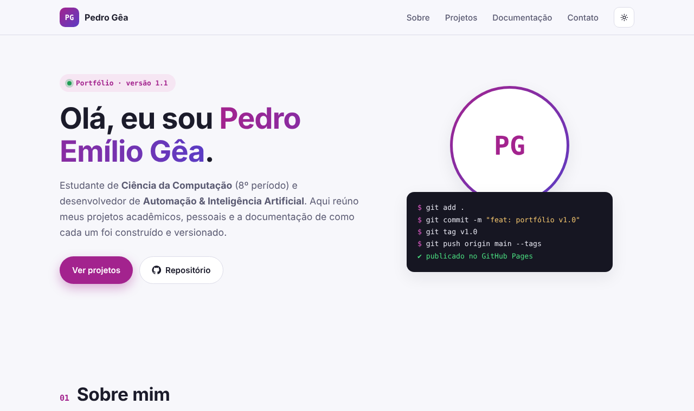
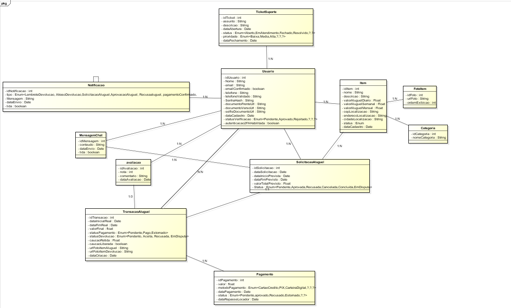
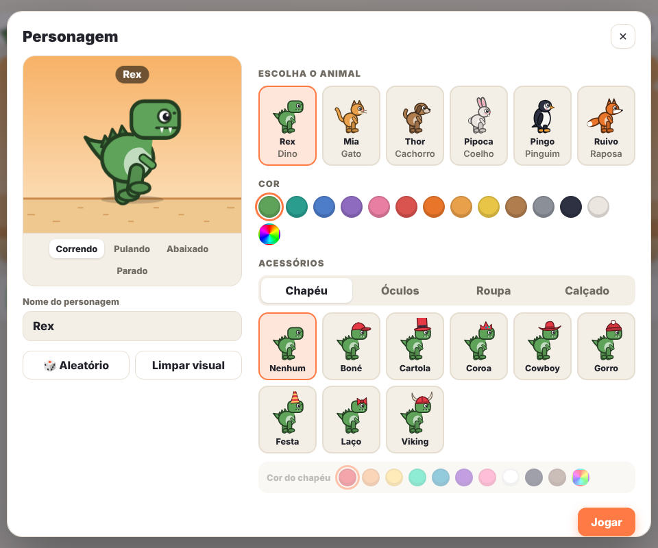

Bootcamp I · Entrega Intermediária
Meu portfólio
no GitHub
Criação de repositório com versionamento: projetos acadêmicos e pessoais, documentação, GitHub Pages e integração com o LinkedIn.
Pedro Emílio Gêa Gontijo Martins
Ciência da Computação · 8º período · Automação & IA
01 · O desafio
Objetivo
Projetos em um só lugar
Acadêmicos e pessoais, cada um com pasta e README próprios.
Boas práticas de Git
Commits padronizados, tags de versão e histórico registrado no CHANGELOG.
Site + LinkedIn
Página no GitHub Pages e projetos integrados ao perfil profissional.
02 · Planejamento do repositório
Seções e estrutura de pastas
github-page/ ├── index.html # site (GitHub Pages) ├── assets/ # CSS, JS e imagens ├── projetos-academicos/ │ ├── 01-portfolio-github-pages/ │ └── 02-alugapp/ ├── projetos-pessoais/ │ └── 01-dino-game/ ├── docs/ # planejamento, Git, LinkedIn ├── apresentacao/ # estes slides ├── CHANGELOG.md └── README.md
- Uma pasta por projeto, numerada e em kebab-case.
- Todo projeto tem README no mesmo modelo: descrição, tecnologias, como executar e aprendizados.
- docs/ concentra planejamento, versionamento, colaboração e LinkedIn.
- Tudo descrito em docs/planejamento.md.
03 · Versionamento com Git
Do computador ao GitHub
$ git add . $ git commit -m "feat: adiciona projetos..." $ git tag v1.1 $ git push origin main --tags ✔ GitHub Pages atualizado
- Feito com o GitHub Desktop: Changes → Commit → Push.
- Mensagens no padrão Conventional Commits (
feat:,docs:,fix:). - Cada entrega marcada com uma tag e registrada no CHANGELOG.
04 · Publicação
Site no GitHub Pages
- HTML, CSS e JavaScript sem frameworks.
- Seções Sobre, Projetos, Documentação e Contato.
- Filtro de projetos, tema claro/escuro e layout responsivo.
- Meta tags Open Graph para prévia no LinkedIn.
- Publicado a cada
pushna branchmain.

05 · Projeto acadêmico
AlugApp
Plataforma de aluguel de itens entre pessoas: quem precisa paga menos sem comprar, e quem tem itens parados gera renda.
- Projeto em grupo do Projeto Integrador I ao IV (CEUB).
- Minha parte: requisitos e regras de negócio, fluxo de aluguel, configuração do Supabase, Dashboard, Chat e recuperação de senha.

06 · Projeto pessoal
Dino Game 2.0
O jogo do dinossauro do Chrome repaginado, com muita personalização.
- 6 personagens com cores, chapéus, óculos, roupas e calçados.
- 5 cenários, 4 velocidades, ciclo dia/noite e sons.
- Recordes salvos no navegador e controles no celular.

07 · Documentação e colaboração
READMEs e trabalho em equipe
Documentação
- README principal com sumário, links, estrutura e versões.
- README por projeto: descrição, tecnologias, prints, como executar e aprendizados.
- Modelo de README para novos projetos.
- CHANGELOG com o histórico de cada versão.
Colaboração
- GitHub Flow: branch por funcionalidade + Pull Request.
- Issues para tarefas e bugs, revisão de código antes do merge.
- Na prática no AlugApp: 4 integrantes no mesmo repositório.
- Licença MIT e .gitignore protegendo segredos.
08 · Integração
GitHub ⇄ LinkedIn
Perfil conectado
Link do LinkedIn no perfil do GitHub e repositório público.
Portfólio em destaque
Site adicionado à seção Destaques, com prévia automática.
Projetos no perfil
Portfólio, AlugApp e Dino Game na seção Projetos, com links e competências.
Por que integrar?
Recrutadores veem no LinkedIn o que eu sei fazer e, com um clique, chegam ao código, à documentação e ao histórico de versões no GitHub.
Obrigado!